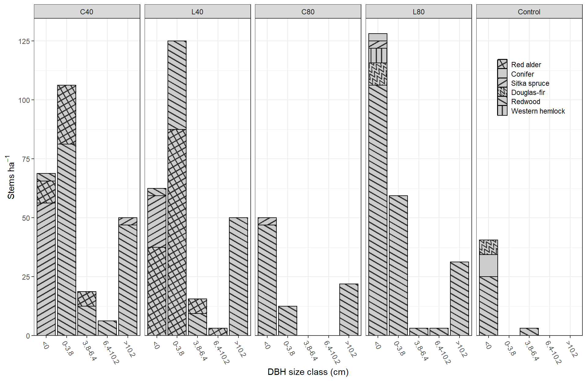

library(tidyverse)I’m only looking at year 2018 and I’m combining the last two size classes. So we have:
Ingrowth includes all trees that “ingrew” after treatment (both 2013 and 2018)
ssd1 <- seed_sap |>
filter(year == "18") |>
mutate(cls_3 = cls_3 + cls_4, .keep = "unused")
ing <- ingrowth |>
filter(year == "18") |>
group_by(treatment, plot, spp) |>
count(name = "ingrowth")
# are all combinations of treatment, plot, spp in ingrowth already in saplings/seedlings?
anti_join(ing, ssd1)## # A tibble: 0 x 4
## # Groups: treatment, plot, spp [0]
## # ... with 4 variables: treatment <chr>, plot <chr>, spp <chr>, ingrowth <int>size_classes <- c("<0", "0-3.8", "3.8-6.4", "6.4-10.2", ">10.2")
ssd <- left_join(ssd1, ing) |> replace_na(list(ingrowth = 0)) |>
pivot_longer(
contains(c("seed", "cls", "ing")),
names_to = "size_class",
values_to = "count"
) |>
mutate(
size_class = factor(
size_class,
levels = c("seedling", "cls_1", "cls_2", "cls_3", "ingrowth"),
labels = size_classes
)
)# To control the order of each stacked bar, create each bar separately from a
# subset of the data, order the common factor in each bar separately with "reorder"
library(ggpattern)
my_patterns <- c(
ALRU2 = "crosshatch",
CONF = "none",
PISI = "stripe",
PSMEM = "wave",
SESE3 = "stripe",
TSHE = "stripe"
)
my_angles <- c(
ALRU2 = 30,
CONF = 30,
PISI = 30,
PSMEM = 30,
SESE3 = -30,
TSHE = 90
)
my_labels <- c(
ALRU2 = "Red alder",
CONF = "Conifer",
PISI = "Sitka spruce",
PSMEM = "Douglas-fir",
SESE3 = "Redwood",
TSHE = "Western hemlock"
)
ssdd <- ssd |>
filter(count > 0) |>
group_by(treatment, spp, size_class) |>
summarise(count = sum(count) * 3.125) |>
relevel_treatment() |>
arrange(-count)
unique_cases <- unique(paste(ssdd$treatment, ssdd$size_class))
# unique_cases <- levels(interaction(ssdd$treatment, ssdd$size_class))
bars <- map(
unique_cases,
~geom_col_pattern(
data = filter(ssdd, paste(treatment, size_class) == .x),
aes(pattern_angle = reorder(spp, count), pattern = reorder(spp, count)),
colour = "black",
fill = "gray80",
pattern_density = 0.09,
pattern_spacing = 0.05,
pattern_key_scale_factor = .32
)
)
ggplot(mapping = aes(size_class, count)) +
bars +
facet_wrap(~ treatment, nrow = 1) +
theme_bw() +
theme(
legend.position = c(.907, .79),
legend.background = element_blank(),
legend.key.size = unit(4, "mm"),
legend.key = element_rect(size = .8, color = "black")
) +
labs(
x = "DBH size class (cm)",
y = expression(Stems ~ ha^-1),
pattern = NULL,
pattern_angle = NULL
) +
guides(x = guide_axis(angle = -60)) +
scale_pattern_manual(values = my_patterns, labels = my_labels) +
scale_pattern_angle_manual(values = my_angles, labels = my_labels) +
scale_y_continuous(expand = c(0, 0, .05, 0), n.breaks = 6) +
scale_x_discrete(limits = size_classes)
ggsave(
filename = "figs/regen.pdf",
device = cairo_pdf,
width = 18.2,
height = 9,
units = "cm"
)
ggsave(
filename = "figs/regen.jpg",
width = 18.2,
height = 9,
units = "cm"
)